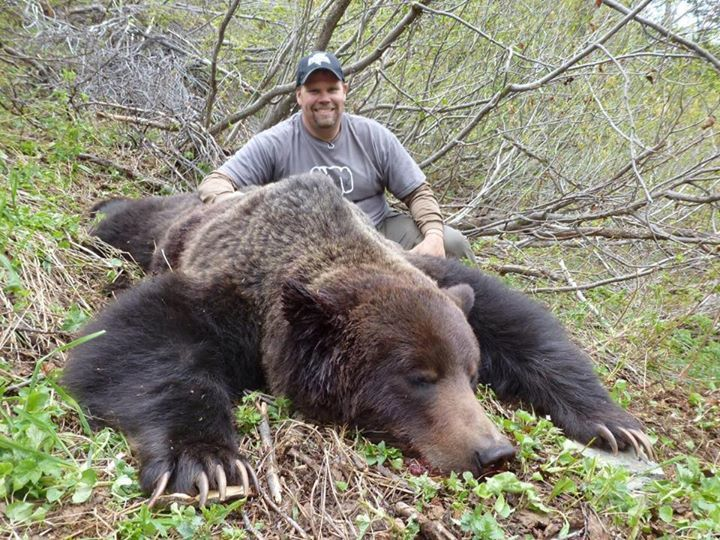
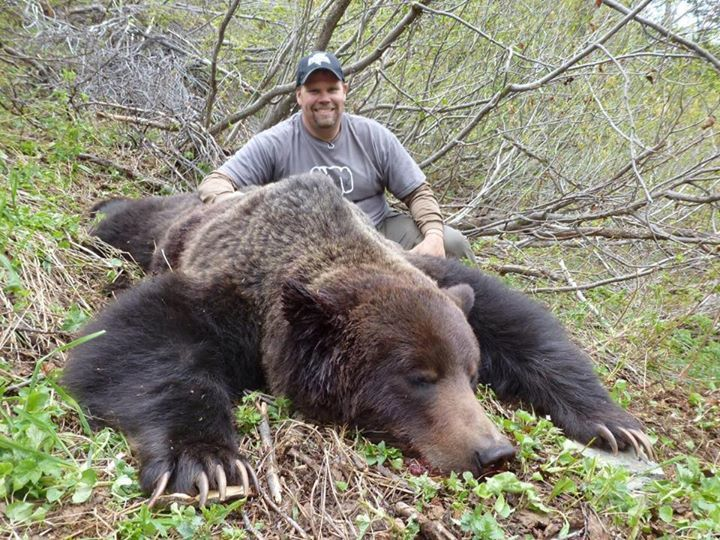

Trophy hunting, by definition, is the hunting of animals for sport. Killing an animal "for fun." Killing an animal for no reason. The truth is that this pastime is costing so many of the earth's creatures their lives. The impact trophy hunting has on many creatures is severe but for one animal in particular- time is running out.
LUSH COSMETICS North America has presented us with an important film- one that showcases the dangers grizzlies face as trophy hunting remains legal in many parts of North America. The film touches on important topics such as why not being on the Endangered Species List may not really be a good thing...
Grizzly bears used to roam happily all throughout North America. Their presence was know all the way from Northern Canada to New Mexico. Thanks to outdated pastimes, like trophy hunting, their presence is scarce. Many poeple in these areas don't even know that grizzlies used to be locals. Grizzly bears have been slowly pushed out of their natural habitats, now only living in areas where there is little human population such as Alaska, British Columbia and Montana. Keeping in mind that these animals used to be all the way in New Mexico, look at the map below to see the only places grizzlies are reguarly spotted thanks to a dwindle in their population due to trophy hunting.
Tweets by World_Wildlife --> 
